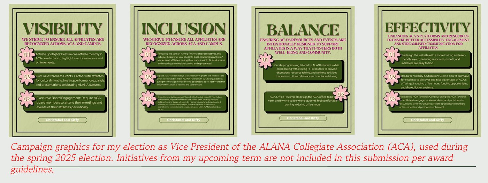
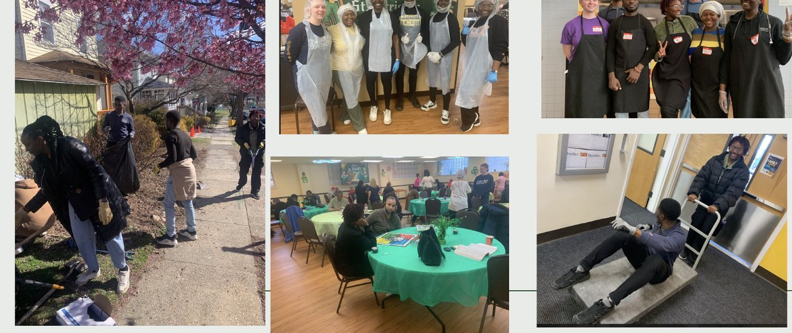

I build technology shaped bythe people it serves.– Kifekachukwu Nwosu
Most people pick between code and community. I chose both. I'm a computer science and women's, gender & sexuality studies double major at RIT, graduating May 2027. I've shipped full-stack apps, first-authored machine learning research on audio deepfakes, researched women's lived experiences, and supported survivors of gender-based violence in Cape Town.
I believe neither field succeeds without the other: technology built without understanding people leaves them behind. I'm drawn to work where technology and ethics meet, and I bring that lens to every role, whether I'm writing code, doing research or working with communities.
RIT '27CS + WGSSSoftware engineeringComputing researchGender studies researchSurvivor advocacyMcNair Scholar
4peer-reviewed papers (IEEE, AAAI, LSA), one as first author
600+people reached through gender-based and intimate partner violence trainings I support
13K+protest tweets studied with NLP to test how AI reads a social movement
350+girls reached through the Power Her Forward conference
$45Kstudent government budget managed as ALANA VP
7awards and scholarships in 2025–26
Tip: open the folders on the left, drag windows around, or switch to Scroll view.
Tip: use Show at the top to see just code, just community work, or everything.
Code
My laptop (tap a sticker)
Code, tools, and how I check that technology works for people (the ones with a heart).
Pick a sticker to see where I've used it.
Projects
Tagging audio clips with expert-defined linguistic features (EDLFs) so a model can tell real speech from fake
Deepfake audio is getting harder to catch by ear and by machine. I led the work on tooling that automatically annotates audio clips with expert-defined linguistic features, the cues sociolinguists use to spot spoofed speech, so detection models become both more accurate and easier to explain.
Built the auto-annotation pipeline that tags clips with linguistic features automatically
Fed those features into deepfake detection to improve accuracy and interpretability
Published as first author: Auto Annotation of Linguistic Features for Audio Deepfake Discernment, Proceedings of the AAAI Symposium Series, 2023
Angular · Java · Spring Boot · REST API · JUnit · SonarQube · Introduction to Software Engineering
A web app that brings music to anyone who wants to learn it. Helpers donate time, old instruments or money to fill "needs" posted by a manager, add them to a funding basket and check out.
Built in a team with an Angular front end and a Java Spring Boot REST API, organized into UI, model and persistence tiers
Designed a shared inventory model so the cupboard and each helper's funding basket reuse the same load, save and search logic
Went past the minimum product with a Performances feature for concerts
Ran SonarQube static analysis and caught a security risk (stack traces exposed in logs) and API routes that didn't bind correctly
Shipped usability fixes: larger buttons, clearer dashboard navigation, an easier-to-reach funding basket and better search
The original repository and demo are no longer available, so this shows our final presentation.
Figma · WCAG 2 (POUR) · ADA · WAVE · Golisano College of Computing, RIT
Up to 30% of gamers have a disability, but before they can play anything they have to get through the storefront. We audited four of them and redesigned what was broken.
Audit: built a rubric from WCAG, the ADA and inclusive design, and tested Steam, itch.io, PlayStation Store and Nintendo eShop
Found: no menu or search in headers, unlabeled carousels, endless "Learn more" links, and sale prices in tiny print
Designed: two storefronts in Figma, Yffik (a rebuilt Nintendo homepage) and Fiker (a console hub that lets you filter games by accessibility features)
Read more
Who we designed for: players with visual, motor and cognitive disabilities, using WCAG's POUR principles (Perceivable, Operable, Understandable, Robust) and the WAVE evaluation tool.
Built in for everyone: standard, dark and high-contrast themes, text up to 200%, reduced motion, link underlines, captions, audio description and transcripts on trailers, 44px+ tap targets, and the Atkinson Hyperlegible font.
Can AI Read a Protest? Framing #EndSARS on Twitter
CRA-DREU Fellow · Lab for Population Intelligence, RIT · Summer 2026 – present
Can an AI model tell how protesters framed Nigeria's 2020 #EndSARS movement? I hand-coded 500 tweets and tested a zero-shot model (BART-large-MNLI) against my labels.
κ 0.01–0.05agreement between the model and human coding, close to chance
95% vs 16%tweets the model called "prognostic," vs. what I found
0.40the model's hidden cutoff for calling a frame present, not the usual 0.50
Takeaway: the model labeled almost every tweet the same way and missed sarcasm and Pidgin. AI needs to be checked against human judgment before it's used to study social movements.
Read more
Data: a public dataset of 13,000+ tweets from the 24 hours after the Lekki toll gate shooting on October 20, 2020. I kept emojis, hashtags and Nigerian Pidgin intact so meaning wasn't lost.
Method: I coded tweets for diagnostic, prognostic and motivational framing (Benford and Snow's collective action frames), then measured the model with precision, recall, F1 and Cohen's kappa.
Why accuracy lied: with prognostic framing in only 16% of tweets, a model that never predicted it would still score 84%. The model even labeled a bare hashtag or a two-word aside like "Why na?" as a call to action.
Next: test other models, add more human coders, and give models framing definitions and #EndSARS context.
Limitations: a single coder and Twitter-only data, which leaves out less digitally connected voices.
COMMUNITYFIRST PRIZEFUNDED
Religion as a Central Barrier to Queer & Women's Liberation in Nigeria
Research Assistant · College of Liberal Arts, RIT · August 2024 – May 2025 · First Prize, RIT WGSS Symposium, Spring 2026
What barriers shape queer experiences in Nigeria? Through legal analysis, interviews and short stories, I found that religion is the system underneath them all.
Takeaway: religion shapes law, family and school, and frames queerness as sinful and "un-African," even though colonialism brought many of those beliefs. The work won first prize and funding to continue.
Read more
How I studied it: literature and legal analysis, interviews, and short story collections, with a focus on lived experiences.
What I found: religion shapes what counts as moral and influences law, including the Same Sex Marriage Prohibition Act and Sharia law. Colonialism replaced many Indigenous belief systems with the religious ones that now define these norms. As a result, queer Nigerians navigate fear, secrecy and internal conflict.
What's next: I'm building an archive of narratives from this research and exploring women's liberation in Nigeria further.
ZINEAWARDORIGINAL SURVEY
The Pink Price Tag
15-page magazine · Editor-in-chief · December 2025 · Gender, Media, and Communication · Communication and Ethics Award, RIT 2026
Why does the pink razor cost more? I wrote, designed and edited a magazine that explains the pink tax, the hidden markup on products marketed to women, and backed it with a small survey of 22 RIT students.
18 / 22notice gender-based price differences
13buy the men's version to save money
0opposed laws banning the pink tax
A small, informal class survey, not a representative sample, but it was a fun way to hear what students on my campus think.
Read more
It covers real examples, a pink tax survival guide, gendered shrinkflation, and the laws in New York and California (AB 1287) and the federal Pink Tax Repeal Act. Sponsored by Her Campus RIT and Women of Excellence Supporting STEM.
Machine Learning Research Engineer · MDATA Lab, UMBC · June 2023 – January 2025
Can the way humans actually speak help both people and AI spot fake audio? Our team of computer scientists and linguists used speech cues to train detectors and to train people.
264students in our deepfake listening training
5 cuespitch, breathing, pauses, consonant bursts and audio quality
4 papersIEEE, AAAI, Language and Linguistics Compass, BAAL · 29 citations
Takeaway: trained students caught 85% of the fakes they'd been unsure about, but got only about 20% of real voices right. Teaching people to doubt is easier than teaching them to judge well.
Read more
For machines: we used expert-defined linguistic features to augment training data for spoofed-audio detection, with datasets like ASVspoof, WaveFake and LJSpeech (IEEE ISI 2023). I led our AAAI paper on auto-annotating clips with these features, so labeling doesn't depend entirely on expert listeners, and presented it at the ATHAI symposium (2023) and ADSA '24.
For people: we built a short listening training, piloted it with small groups, then tested it with 264 undergraduates across nine courses, using a control group and pre- and post-tests. I also helped create trainings for high school students (2023–24).
Why it matters to me: this is where I learned that technical work gets better when you bring in people who study humans.
Publications4 papers · 29 citations
First author · 3 citations
Auto annotation of linguistic features for audio deepfake discernment
K. Nwosu, C. Evered, Z. Khanjani, N. Bhalli, L. Davis, C. Mallinson, V. P. Janeja · Proceedings of the AAAI Symposium Series, 2(1), 242–244 · 2023 · Read on ResearchGate
Co-author · 17 citations
Learning to listen and listening to learn: Spoofed audio detection through linguistic data augmentation
Z. Khanjani, L. Davis, A. Tuz, K. Nwosu, C. Mallinson, V. P. Janeja · IEEE International Conference on Intelligence and Security Informatics (ISI) · 2023 · Read on IEEE Xplore
Co-author · 8 citations
A place for (socio)linguistics in audio deepfake detection and discernment: Opportunities for convergence and interdisciplinary collaboration
C. Mallinson, V. P. Janeja, C. Evered, Z. Khanjani, L. Davis, N. N. Bhalli, et al., including K. Nwosu · Language and Linguistics Compass, 18(5), e12527 · 2024 · Read the paper
Co-author · 1 citation
Sociolinguistically-informed educational trainings for audio deepfake discernment
C. Evered, C. Mallinson, V. P. Janeja, Z. Khanjani, L. Davis, N. Naqvi, et al., including K. Nwosu · British Association for Applied Linguistics · September 2024 · View the presentation
Leadership
2023 – 2025
Freshman Representative → President · Organization of African Students
Freshman Representative (2023–24), then President (2024–25).
More than doubled turnout: regular meetings grew from 20–25 students to about 60
Ran Afro Week and the 25th-anniversary Afrocentric Gala, with events representing multiple African regions
Opened OAS up to non-African students who wanted to learn about the culture and be part of the community
OAS was named ALANA Cultural Organization of the Year
OAS meetings, panels, giveaways and the 25th Afrocentric Gala
2025 – 2026
Vice President · ALANA Collegiate Association, RIT Student Government
ACA is the umbrella for RIT's African, Latin, Asian and Native American student organizations. I managed a $45,000 budget ($30,000 operating plus student salaries).
My platform had four pillars:
Visibility: monthly affiliate spotlights in the ACA newsletter, and cultural-month events co-hosted with affiliates
Inclusion: freshman representatives so first-years connect with ACA leaders, and an expanded ALANA Wednesdays that celebrates communities during their heritage months
Balance: programming built with RIT resources around wellness, mental health and cultural relevance
Effectivity: a friendlier website and clearer paths to ACA's office hours, funding and other resources

My spring 2025 campaign graphics
Alternative Spring Break
Camden, New Jersey · March 2024 · one week
A week of service with community partners in Camden: tutoring high school students, serving at a soup kitchen, helping at a senior home, and cleaning up local churches and schools.

Cleanup, soup kitchen and community meals in Camden
More service
Newman Big/Little mentorship: peer support and community for fellow students
RIT Foodshare: distributing food to students and community members in need
Mt. Hope Cemetery cleanup crew: caring for one of Rochester's historic spaces
WiSEN panels: spoke with faculty and staff about supporting students of color in STEM
Where I've presented, organized, advocated and served.
Advocate
Court support + GBV trainings, Mosaic
Help survivors through protection orders and court, and support community trainings on gender-based and intimate partner violence that have reached 600+ people.
Mitchells Plain · Philippi · Khayelitsha · 2026
Cape Town
Organizer
Power Her Forward Girls Conference
Helped plan and run a day-long leadership conference for 350+ girls with the Women's Foundation of the Genesee Valley.
Rochester, NY · May 5, 2026
ROC NY
Presenter
RIT WGSS Symposium
★ First prize + research funding
Presented my research on religion as the central barrier to queer and women's liberation in Nigeria.
Rochester, NY · Spring 2026
ROC NY
Delegate
RIT Student Government Consortium
Represented RIT Student Government alongside student leaders from RIT's global campuses.
Kosovo · October 2025
Kosovo 2025
Presenter
2025 Annual Undergraduate Conference
Presented our accessibility audit of gaming storefronts and the Figma redesigns that fix what we found.
Rochester, NY · July 2025
ROC NY
Presenter
ADSA '24, Academic Data Science Alliance
Presented my work on auto-annotating linguistic features to detect and explain audio deepfakes.
Michigan · November 2024
MI 2024
Presenter
RIT Student Research in Communication Conference
Presented "Can You Spot a Deepfake?" on how listeners can tell real voices from AI-generated ones.
Rochester, NY · April 2024
ROC NY
Panelist
WiSEN panels
Spoke with faculty and staff about supporting students of color in STEM, and joined a panel on navigating college.
Rochester, NY · Spring 2024
RIT
Volunteer
Alternative Spring Break
A week of tutoring, soup kitchen shifts, senior home visits and community cleanups.
Camden, NJ · March 2024
Camden NJ
Speaker
Assured and Trustworthy Human-centered AI (ATHAI)
Gave a lightning talk and joined a panel on our audio deepfake annotation research at this AAAI symposium.
November 2023
ATHAI 2023
Awards
1
First Prize, WGSS Symposium Student Award
RIT · 2026 · for my research on religion as a central barrier to queer and women's liberation in Nigeria, with funding to continue the work
★
Communication and Ethics Award
RIT · 2026 · for "The Pink Price Tag," my magazine on the pink tax, backed by an original student survey
★
Student Beacon Award
RIT Division of Access, Engagement, and Success · 2026 · one of three students honored for outstanding leadership and for building a welcoming community on campus
$
Larsen-Brownell Scholarship
RIT · 2026 · up to $2,000 for community-engaged project work
$
Alfred L. and Ruby C. Davis Scholarship Award
RIT · 2026 · for improving campus life and community involvement
★
Liberal Arts Multidisciplinary Scholar
RIT College of Liberal Arts · 2025 · financial and academic support for STEM majors who take on a second major in the liberal arts, in my case computer science + WGSS
$
Ruth M. and Brackett H. Clark Internship Support Fund
RIT College of Liberal Arts · 2025 · supported my Girls Initiative internship at the Women's Foundation of the Genesee Valley in Rochester, NY
Résumés
Pick the version that fits what you're hiring for.